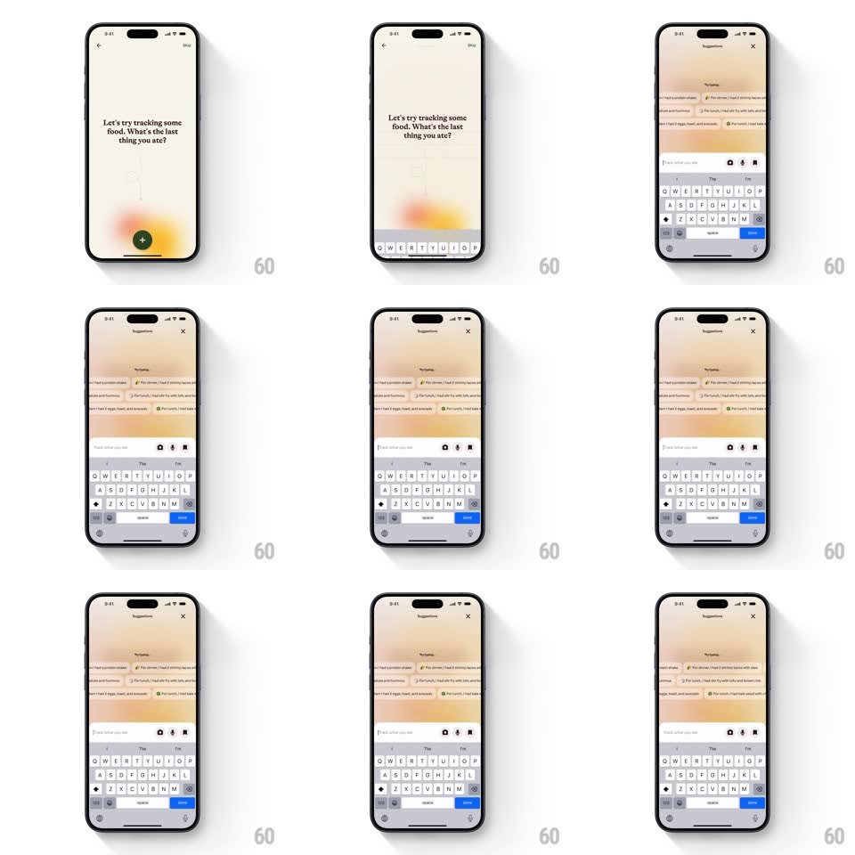

Media
Frame-by-frame

Rebuild this interaction 1:1: Alma's food-tracking input - tapping the green plus button slides the prompt screen up into a suggestions sheet where meal ticker chips stagger in above the keyboard and the input field takes focus.

Rebuild this interaction 1:1: Alma's food-tracking input - tapping the green plus button slides the prompt screen up into a suggestions sheet where meal ticker chips stagger in above the keyboard and the input field takes focus.
## Integration
Integration: stack-agnostic spec - springs given as stiffness/damping, timed motions as duration + curve; map every value to your framework and animation library of choice.
## Scene
Cream screen: back chevron and Skip link, prompt "Let's try tracking some food. What's the last thing you ate?", a warm orange gradient glow low on the screen, and a dark green circular + button. Destination: a "Suggestions" sheet with a close X, rows of meal suggestion chips ("For dinner, I had a spinach paneer", "For lunch, I had dal fry with bhindi sabzi", "For dinner, I had 4 dosa...", "For lunch, I had tuna..."), an input field ("I'll track what you ate") with attach, camera and mic icons, and the keyboard raised.
## Motion spec
Pattern: sheet transition with staggered ticker, ~600ms.
- Open: tapping + slides the sheet up over the prompt screen (400ms, ease-out), the prompt content lifting away; the keyboard rises with it (matching 400ms).
- Chips: suggestion rows stagger in from the right (60ms apart, 300ms ease-out, 12px slide), each a tinted pill with a small icon.
- Ticker: the suggestion rows then scroll slowly like a ticker (translateX, ~20s loop, alternate direction per row).
- Focus: the input field highlights (border darkens, 150ms) and the cursor blinks; the + button cross-fades into the sheet's close affordance (200ms).
## Calibration
- Sheet and keyboard move as one unit - no gap opening between them.
- The ticker never stops; it idles at reading speed, not marquee speed.
## Reduced motion
Sheet fades up (250ms); chips appear without stagger; ticker static.
## Don't miss
- The warm gradient glow carries over from the prompt screen into the sheet header.
- The input accessory row (attach, camera, mic) sits above the keyboard at all times.